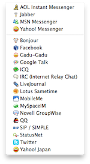

Discover Adium
Adium is a free instant messaging application for Mac OS X, released under the GNU GPL and developed by the Adium team. With Adium, you can connect to any number of messaging accounts on any combination of supported messaging services and then chat with other people using those services. Here is some of what Adium has to offer.
Setting up accounts |
|
|  |
Adium supports 18 different IM protocols from AIM to Zephyr. You can connect as many names on as many different services as you want all at the same time. It gives you the flexibility to maintain all your contacts on a single buddy list as opposed to needing to run several different clients all at the same time. It is also available in 21 different languages and supports several international protocols such as Gadu-Gadu, Yahoo! Japan, and QQ. Click the link to learn more about setting up your accounts. |
Configuring event notifications |
|

|
Adium supports visual event notifications via Growl. Growl notifications are highly configurable and customizable. Growl is one of the most advanced system notification systems available on any platform. Growl is bundled along with Adium so you can be up and running very quickly and start using these advanced features. Click the link to read more about Growl and Events in Adium. |
Customizing the Interface |
|
|
Adium is one of the most customizable IM clients available. You can change everything from the look of your buddy list to the message style, from your emoticons to your sounds. Your entire experience is completely customizable to meet your tastes. You can also create your own Xtras and submit them to be shared with everyone via the Xtras site. Click the link to see more Xtras. |
|
Advanced Features |
|

|
Adium is full of advanced features. It supports tabbed messages, address book integration, meta-contacts, contact list hiding, a brand new transcript viewer with Spotlight integration, and many many others. Try it to see just how much you can do. |